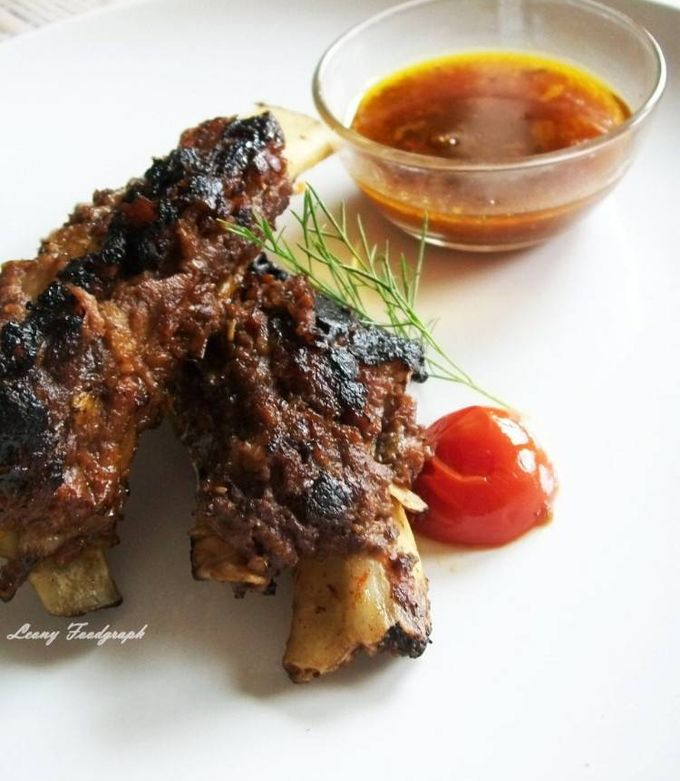
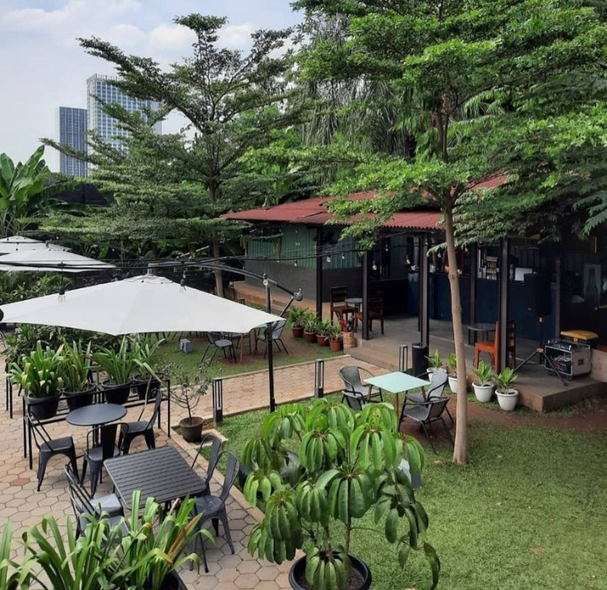
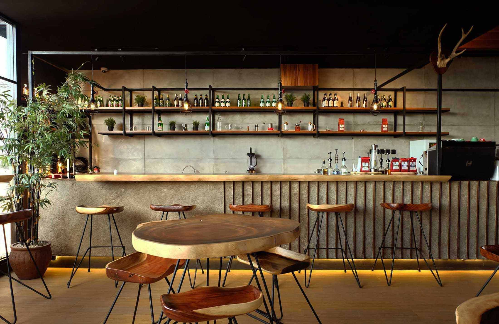
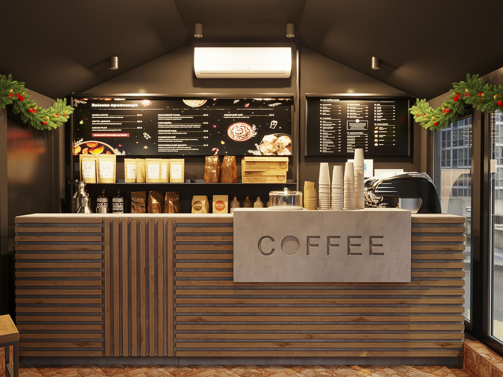

Sayuran musiman, saus asam manis jeruk limau.
Kitchen & Dining
Rasa yang tumbuh
Rasa yang tumbuh
dari meja yang tenang
Hidangan musiman dari bahan lokal terbaik, dimasak perlahan dan disajikan di ruang hijau yang teduh. Sebuah jeda yang layak dirayakan.
12+
Hidangan musiman
4.9
Rating pengunjung
100%
Bahan lokal


01 — Cerita Kami
Dapur kecil dengan niat besar untuk setiap piring.

“Kami memasak seperti sedang menjamu keluarga sendiri.”
— Chef Kepala
Berawal dari kecintaan pada bahan segar pasar pagi, Yudi Resto menghadirkan masakan modern Nusantara yang jujur — tanpa berlebihan, namun selalu berkesan. Setiap menu berganti mengikuti musim panen petani lokal mitra kami.
-
i.
Bahan Musiman
Dipasok langsung dari petani & nelayan lokal.
-
ii.
Dimasak Perlahan
Teknik slow cooking untuk rasa yang dalam.
-
iii.
Ruang yang Teduh
Interior hijau yang tenang untuk makan bersama.
03 — Galeri
Sudut-sudut yang teduh
Ruang makan yang dirancang untuk percakapan panjang dan makan malam tanpa terburu-buru.

80
Kursi indoor & outdoor


04 — Ulasan
Kata mereka tentang kami
“Ikan kakap bumbu kuningnya luar biasa — segar, harum, dan porsinya pas. Suasananya tenang sekali, cocok untuk makan malam bersama keluarga.”
“Interiornya elegan tanpa berlebihan. Pelayanannya ramah dan sigap.”
“Croissant pudding-nya wajib dicoba! Salah satu dessert terbaik di Jakarta Selatan.”
05 — Reservasi
Reservasi via WhatsApp
Simpan satu meja untuk Anda
Alamat
Jl. Senopati No. 45, Kebayoran Baru, Jakarta Selatan, 12190
Jam Buka
Lunch · Selasa – Minggu11:00 – 15:00
Dinner · Selasa – Minggu17:30 – 22:30
SeninTutup